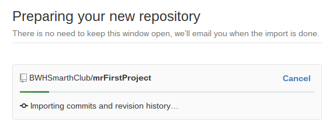
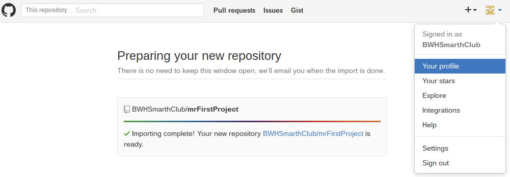
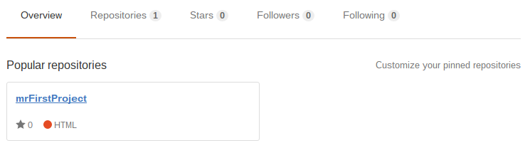
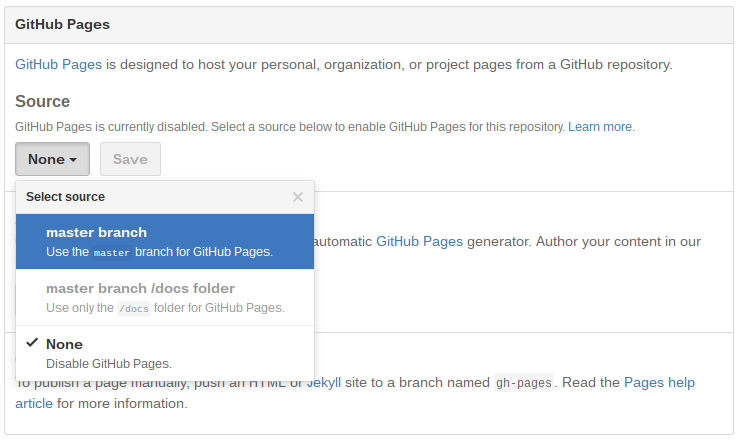
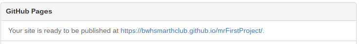

Achilles: So I've got my GitHub account all set up. Are we going to make something now?
Tortoise: Indeed we are. We're going to make your first sketch.
Achilles: Why do you call it a sketch?
Tortoise: We're going to focus on writing programs that draw something on the screen. It's a good way to learn coding because you can actually see what's going on and experiment with it. Kind of like you would do if you were drawing in a sketchbook.
Achilles: OK. I guess that name is fitting.
Tortoise: I think so. Your sketch will be stored in a repository on your GitHub account.
Achilles: Are you going to explain what a repository is now?
Tortoise: Sure, at least partially. A repository is basically a place where all of the files for your sketch are stored. It allows you to do a lot of really useful things, like keep track of changes you make and work with others on projects. We won't get into all that just yet, though. For now, we're only going to use your repository to edit your code and run it over the internet.
Achilles: Got it. Small steps.
Tortoise: Right. Slow and steady wins the race.
Achilles: If you say so...
Tortoise: I always do. Are you ready to make your first repository?
Achilles: I'm ready. Will it be hard?
Tortoise: Not at all. To make it easier, we're going to import a "blank" sketch that I've prepared for you. It contains all of the files you'll need, but it doesn't really do anything.
Achilles: What's the point of making something that does nothing?
Tortoise: Think of it as a blank page in your sketchbook. It's where you'll start when you begin writing code.
Achilles: Got it. Let's make this new repository.
Tortoise: Are you signed in on github.com?
Achilles: I am.
Tortoise: Are you on your "Profile" page?
Achilles: Remind me how to get there again...
Tortoise: Sure. Just click the drop-down menu in the upper-right corner, and select "Your Profile".

Achilles: Right. I'm there. I still don't have any repositories

Tortoise: We're going to make one now. Click the "+" menu in the upper-right corner and select "Import repository".

Achilles: It's asking me for "My old repository's clone URL".
Tortoise: Good. It wants you to tell it where to find the repository we're going to copy. Type or copy/paste this URL into that box:
https://github.com/marthClub/blankSketchAchilles: Done.
Tortoise: Now, give your new repository a name. Something like "myFirstProject" will work. Then click "Begin import".

Achilles: OK. It's importing.
Tortoise: This may take a few minutes. While we wait, do you have any questions you want to ask?
Achilles: Sure. Why are we copying an existing repository instead of starting from scratch?
Tortoise: It just saves us time. Your sketches all need to have a few files in them to work. Rather than uploading them each time you make a new sketch, I find it easier to just import them from the blankSketch I've already created.
Achilles: That makes sense. So I should follow these same steps every time I want to make a new sketch?
Tortoise: That's how I do it.
Achilles: Is there any other time when I might import a repository?
Tortoise: So, everything you make on GitHub is public, allowing anyone can see it. That means you can see things that other people make too. Not only that, but you can import other peoples' projects into your own GitHub account.
Achilles: Why would I do that?
Tortoise: Well, let's say I make something that you think is cool. You could import a copy of it so that you can play around with it. You might try making changes to it to see what happens. In the process you might learn some new things about coding. Or you could use parts of it as a basis for building something of your own.
Achilles: That makes sense. Oh hey! it's done importing.
Tortoise: Fantastic! Go ahead and return to your profile page using the drop-down menu.
Achilles: I'm back at the profile page. I have a repository now!
Tortoise: Nice work.
Achilles: Oops! I just realized I called it mrFirstProject by mistake.
Tortoise: That's funny! It doesn't matter. Click on the name of the repository to open it.
Achilles: Whoa! There's a lot going on here.
Tortoise: There is, but don't worry. We're only going to focus on a couple pieces right now. The most important is the "Code" tab, which is open now. It shows the files in your repository. Right now you'll see four files: README.md, index.html, p5.js, and sketch.js.

Achilles: What do those files do?
Tortoise: README.md doesn't really do anything. It's just a description of what your repository does. Index.html and p5.min.js are two files that need to be in your repository to make your code run. You won't ever need to do anything with them, except leave them there. Sketch.js is the file where you're going to write your program. But we're not ready to tackle that just yet.
Achilles: This is getting confusing.
Tortoise: You really don't need to worry about any of it yet. We aren't going to do anything with the files until the next Part. Before we get to that, we just have one more thing we need to do. We're going to set the repository up so that your sketch runs as a webpage.
Achilles: OK. How do I do that?
Tortoise: Click on the "Settings" tab, and scroll down to the "GitHub Pages" section.
Achilles: Got it. It says "None".
Tortoise: Click that "None" box, and select "Master branch". Then click "Save".
Achilles: Got it.
Tortoise: Now if you scroll back down to the "GitHub Pages" section, you'll see the address for your website.
Achilles: You mean I just made a website?
Tortoise: Indeed! Your very own! Right click (2-finger tap in Chromebooks) the web address you see, and open it in a new tab to see it. You might get a 404 error message. That's because sometimes GitHub takes a while to update things. Just keep refreshing your browser until the site comes up.
Achilles: It's just a blank page!
Tortoise: Then it worked.
Achilles: But that's boring!
Tortoise: I agree. In the next Part, we'll finally write some code and make it do something.
Achilles: OK. So we're done with this Part?
Tortoise: We are!
Achilles: I'm feeling a little overwhelmed. I don't really know what I just did.
Tortoise: That's OK. This Part was a little tedious. Let me just review what we did. First, we created a new repository by importing a copy of a blank one.
Achilles: And the repository is just a place where the files are stored?
Tortoise: Correct. Then we made the repository run as a webpage.
Achilles: Yeah, a really boring one. What's the point of that?
Tortoise: In the future, when we put some actual code into our sketch, we'll need a way to run it. We'll use the webpage to do that.
Achilles: So the program is going to run as a webpage?
Tortoise: Right. That lets us test out our code and see what it's doing by simply visiting the webpage. In the next part, we'll write some code and then go to that tab that has your webpage open and click refresh to make the code run.
Achilles: OK. I see. So we need to do the webpage thing so we can see the code working.
Tortoise: Correct.
Achilles: Will anyone be able to visit that webpage and run the program?
Tortoise: Yes. That means that once you get something cool working, you can send a link to your friends and show it off.
Achilles: OK. I think I understand. So basically we just created a new sketch in a repository and set it up so that we can run it and share it. Will I do this every time I make a new sketch?
Tortoise: Yes. Only next time it will go much faster.
Achilles: Good. I like fast.
Tortoise: Indeed. So, if you're ready to actually write some code, click on the link at the bottom of the page to go to the next Part.